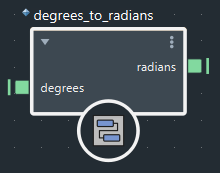

当您使用“选项卡”(Tab)菜单向图表添加复合时，即从该复合的节点定义文件引用该复合。引用复合的左上方有一个菱形图标。

可以在参数编辑器中为引用复合的输入设置值，也可以通过连接驱动输入值。
此外，还可以双击以进入复合并查看其内部子图。但是，您无法以任何方式更改内部子图（包括更改内部节点上的值），除非先导入复合。
如有必要，请通过连接相应数据类型的值或通过单击鼠标右键手动设置端口类型，确保复合的正确版本已实例化。仅当复合已超负荷支持多个类型且其当前端口类型不能达到您的目的时，才需要执行此操作。
右键单击引用复合（而不是其中一个端口）。
选择“设为可编辑”(Make Editable)。
要导入嵌套在其他引用复合中的引用复合，您必须先从最顶部开始导入其所有引用父复合。
导入后，复合将不再是引用复合。如果修改并重新发布原始节点定义，该复合并不会随之更新。